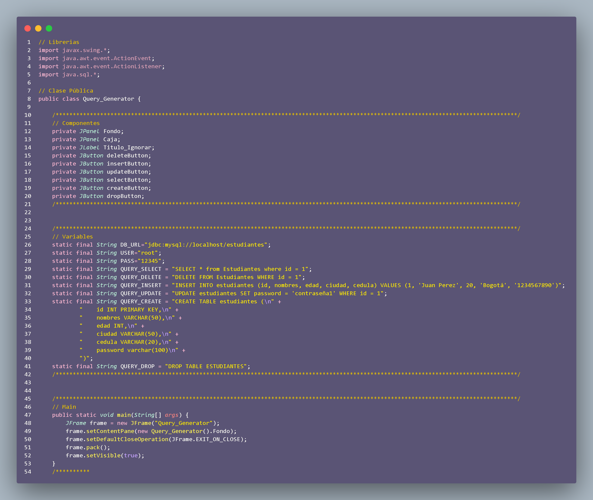
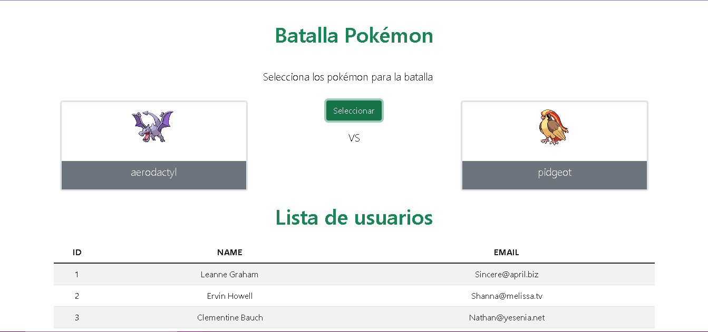
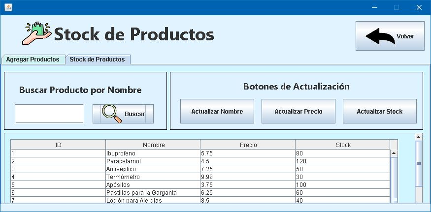

Proyectos

Base de datos
Base de Datos enlazada a proyectos

Web Pokemon
Página web diseñada para realziar emparejamientos Pokemon con el uso de
API

Farcia
Programa hecho en Java que permite el control de inventario y de
usuarios para una farmacia
Contactos
Youtube
Linkedin
Github